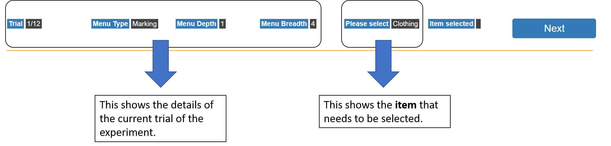
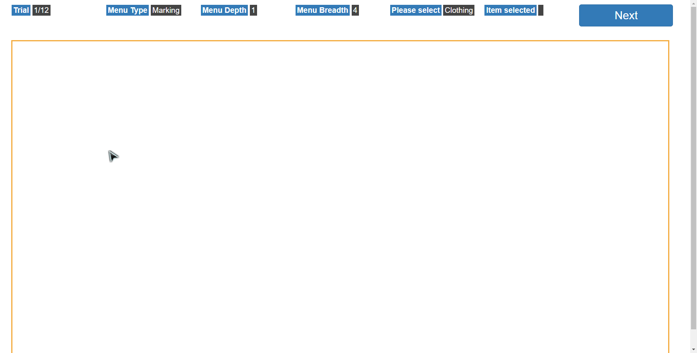

Dear participant , please read the instructions below carefully before pressing Next.
This entire experiment aims to compare two different methods of menu navigation: a Marking Menu and a Radial Menu. We hope to investigate the differences in the effectiveness and usefulness between these two methods. More details on both these menus will be explained below.
The top of the experiment page will display various key details throughout the experiment.
The bottom of the page will be where the main experiment takes place (within the orange box).

Note: You can also draw the relevant strokes quickly to select a specific item without waiting for the entire menu to show (eg. drawing a straight line down will select ‘Food’ without having to open the full menu).
You will be asked to complete a post-experiment questionnaire after the experiment is complete.
Please remember to keep the .csv files that are being downloaded by the browser!